<!doctype html>
<html lang="en">
<head>
<meta charset="utf-8">
<meta name="viewport" content="width=device-width, initial-scale=1">
<title>Issue #810 - Session: Terminal mode - QA Agent verification</title>
<style>
  body { font-family: -apple-system, "Segoe UI", Roboto, Arial, sans-serif; background:#0b1020; color:#e6e9f2; margin:0; padding:24px; line-height:1.5; }
  h1,h2,h3 { color:#fff; }
  h1 { border-bottom:2px solid #28304a; padding-bottom:8px; }
  code, pre { font-family:"Cascadia Mono", Consolas, monospace; background:#141a2e; border:1px solid #28304a; border-radius:6px; }
  code { padding:1px 5px; }
  pre { padding:10px; overflow:auto; font-size:12px; }
  table { border-collapse:collapse; width:100%; margin:12px 0; }
  th,td { border:1px solid #28304a; padding:8px 10px; text-align:left; vertical-align:top; font-size:14px; }
  th { background:#1b2238; }
  .pass { color:#22c55e; font-weight:700; }
  img { max-width:280px; border:1px solid #28304a; border-radius:8px; margin:6px 8px 6px 0; vertical-align:top; }
  .shots { display:flex; flex-wrap:wrap; gap:8px; }
  .muted { color:#99a0b8; }
  .ac { background:#141a2e; border:1px solid #28304a; border-radius:10px; padding:14px 16px; margin:14px 0; }
</style>
</head>
<body>
<h1>Issue #810 - Session: Terminal mode (the V1 hero) - QA verification</h1>
<p class="muted">QA Agent independent verification - CenCon Development Method. Repo
<code>thefrederiksen/devthrottle</code>, branch <code>issue-810-mobile-terminal</code> (PR #814),
verified at branch tip <code>25615d6c</code>. This report is produced independently of the Developer
Agent's report and screenshots - every criterion below was reproduced by QA with its own running app
and its own captures.</p>

<h2>How QA verified (independent harness)</h2>
<ul>
  <li>Checked out the PR branch into a fresh isolated worktree; built the mobile app from source
      (<code>npm ci &amp;&amp; npm run build</code> = <code>tsc --noEmit</code> typecheck + Vite build) - 0 type errors.</li>
  <li>Allocated isolation <strong>slot 15</strong> (<code>scripts/agent-session-isolation.ps1</code>),
      built and launched a <strong>test Director</strong> (Control API <code>http://127.0.0.1:7881</code>),
      and created a controllable <code>RawCli</code> <code>powershell</code> session
      (<code>2764bf31-04cf-4829-a62d-1568c5f7aea6</code>). The user's installed Gateway/Director were never touched.</li>
  <li>Served the <strong>real built bundle</strong> through a QA stand-in for the Gateway front door that
      injects the per-machine token into <code>index.html</code> exactly as
      <code>CcDirector.Gateway/Mobile/MobileApp.cs</code> does (replacing <code>__GATEWAY_TOKEN__</code>),
      and proxies <code>/sessions/*</code> and <code>/wingman/tts</code> to the test Director
      (<code>/wingman/tts</code> -&gt; the Director's identical <code>/tts</code> nova-voice endpoint).
      The front door logs <strong>method / path / bearer / status / body</strong> for every API call.</li>
  <li>Drove the app with Playwright at a true <strong>phone viewport (390 x 844, deviceScaleFactor 3,
      isMobile, hasTouch)</strong>, headless Chromium, trusted input events.</li>
  <li>AC10 was exercised in <strong>both</strong> front-door modes: auth OFF and auth ON (the front door
      rejects a missing/wrong bearer with 401, accepts the injected token with 200).</li>
</ul>
<p class="muted">Evidence files in this folder: <code>qa-01..qa-14-*.png</code> (phone-viewport screenshots),
<code>qa-network-authoff.log</code> / <code>qa-network-authon.log</code> (per-call method/path/bearer/status/body),
<code>qa-desktop-buffer-same-session.txt</code> (the Director buffer the desktop Terminal also renders).</p>

<h2>Acceptance criteria - Expected vs Actual</h2>

<div class="ac"><h3>AC1 - Tapping a row opens the Terminal bound to that session id <span class="pass">PASS</span></h3>
<p><strong>Expected:</strong> the route carries the session id. <strong>Actual:</strong> the roster row
"wt-qa-810 / Developer / 2764" was tapped and navigated to
<code>/m/session/2764bf31-04cf-4829-a62d-1568c5f7aea6</code>; the same id is shown under the header.</p>
<div class="shots">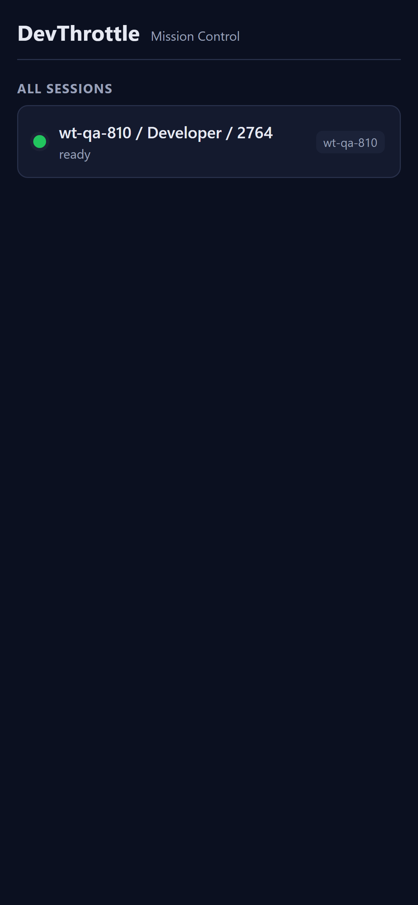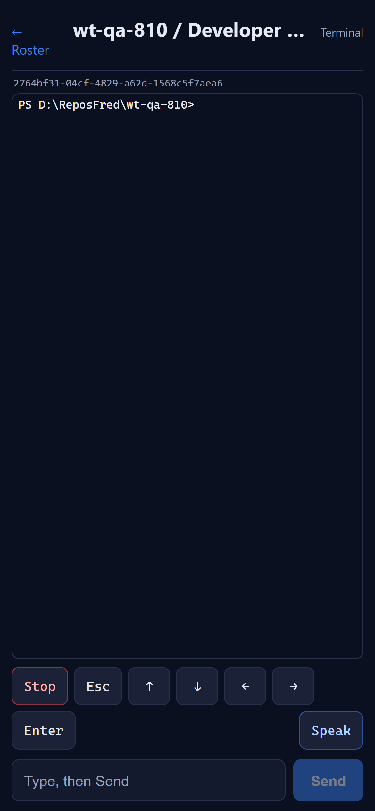</div></div>

<div class="ac"><h3>AC2 - Mirror shows the same recent output as the desktop Terminal <span class="pass">PASS</span></h3>
<p><strong>Expected:</strong> the phone mirror matches the desktop tail. <strong>Actual:</strong> the phone
xterm mirror renders the same content as the Director buffer (<code>GET /sessions/{sid}/buffer</code>) -
the single shared source the desktop Terminal tab also consumes. Captured side by side: the phone shot and
the Director buffer text (<code>qa-desktop-buffer-same-session.txt</code>) - identical prompts, command output
and the <code>Control-C</code> tail.</p>
<div class="shots">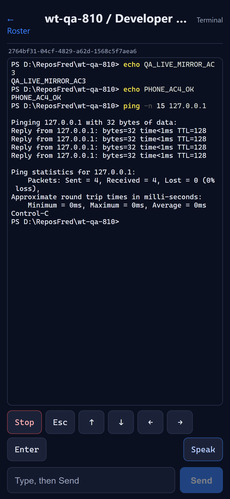</div></div>

<div class="ac"><h3>AC3 - Mirror updates live; the <code>since</code> cursor advances <span class="pass">PASS</span></h3>
<p><strong>Expected:</strong> new lines appear within one poll, no manual refresh, each poll requests only
output after the last cursor. <strong>Actual:</strong> <code>qa-network-authoff.log</code> shows successive
<code>buffer?raw=true&amp;since=N</code> calls with a strictly increasing N
(<code>200 -&gt; 297 -&gt; 382 -&gt; 421 -&gt; 448 -&gt; 477 -&gt; 489 -&gt; 639 -&gt; 688 -&gt; 737 -&gt; 1013</code>);
output injected into the session appeared in the mirror within one poll with no reload.</p>
<div class="shots">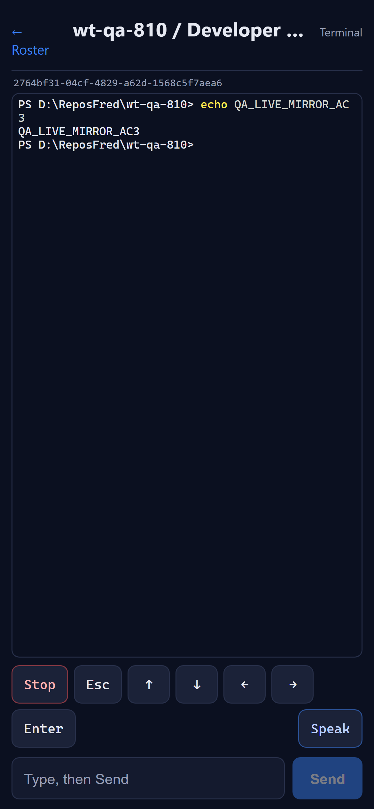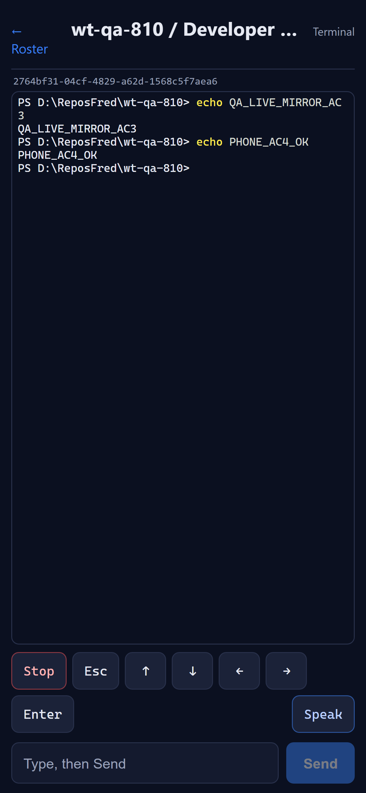</div></div>

<div class="ac"><h3>AC4 - Type + Send submits the line <span class="pass">PASS</span></h3>
<p><strong>Expected:</strong> typed text reaches the session and the agent acts on it.
<strong>Actual:</strong> <code>echo PHONE_AC4_OK</code> was typed and Send pressed; the network shows
<code>POST /prompt {"text":"echo PHONE_AC4_OK","appendEnter":true} -&gt; 200</code> and the mirror renders the
echoed <code>PHONE_AC4_OK</code>; the input box cleared.</p>
<div class="shots">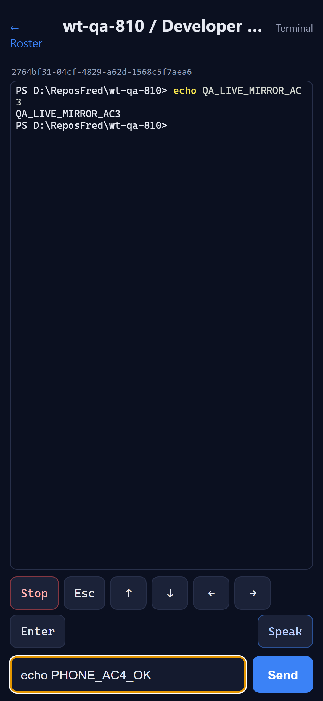</div></div>

<div class="ac"><h3>AC5 - Enter sends a bare carriage return (AppendEnter=false) <span class="pass">PASS</span></h3>
<p><strong>Expected:</strong> a carriage return without sending the text box contents.
<strong>Actual:</strong> captured body <code>POST /prompt {"text":"\r","appendEnter":false} -&gt; 200</code>.</p>
<div class="shots"></div></div>

<div class="ac"><h3>AC6 - Esc calls POST /escape (2xx) <span class="pass">PASS</span></h3>
<p><strong>Expected:</strong> the escape endpoint is called and the session reacts.
<strong>Actual:</strong> <code>POST /sessions/{sid}/escape bearer=yes -&gt; 200</code>.</p>
<div class="shots">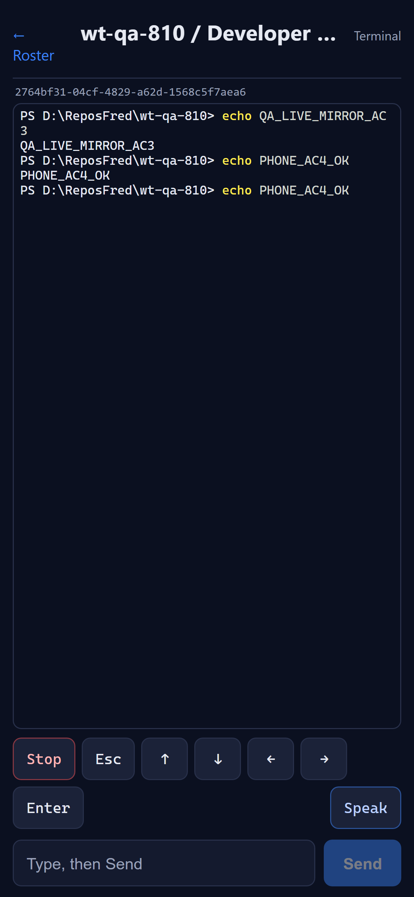</div></div>

<div class="ac"><h3>AC7 - Stop calls POST /interrupt and interrupts a running turn <span class="pass">PASS</span></h3>
<p><strong>Expected:</strong> a running agent turn is interrupted. <strong>Actual:</strong> a running
<code>ping -n 15 127.0.0.1</code> was interrupted by Stop; the network shows
<code>POST /sessions/{sid}/interrupt -&gt; 200</code> and the mirror shows <code>Control-C</code> and a
returned prompt (the ping was cut off after 4 replies).</p>
<div class="shots">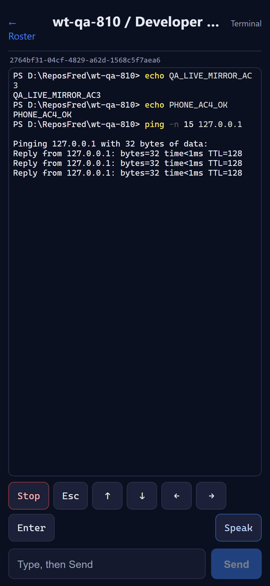</div></div>

<div class="ac"><h3>AC8 - Each arrow sends its raw key sequence via /prompt (AppendEnter=false) <span class="pass">PASS</span></h3>
<p><strong>Expected:</strong> one prompt call per arrow with the expected payload.
<strong>Actual,</strong> captured bodies (all <code>appendEnter:false -&gt; 200</code>):
Up <code></code>, Down <code></code>, Left <code></code>, Right <code></code> -
exactly the VT100 cursor-key sequences in <code>mobile/src/terminal/keys.ts</code>.</p>
<div class="shots"></div></div>

<div class="ac"><h3>AC9 - Speak fetches TTS audio over plain HTTP and plays it <span class="pass">PASS</span></h3>
<p><strong>Expected:</strong> an audio HTTP response (audio content-type), not a SignalR frame, played.
<strong>Actual:</strong> Speak issued <code>GET buffer?raw=false&amp;lines=30</code> (clean text to read) then
<code>POST /wingman/tts -&gt; 200 ct=audio/mpeg</code> over plain HTTP; the <code>&lt;audio&gt;</code> element
played it - measured live: <code>src</code> a <code>blob:</code> URL, <code>paused=false</code>,
<code>duration=58.32s</code>, <code>currentTime</code> advancing <code>0.003 -&gt; 1.006</code>. The static app
uses no SignalR for audio.</p>
<div class="shots">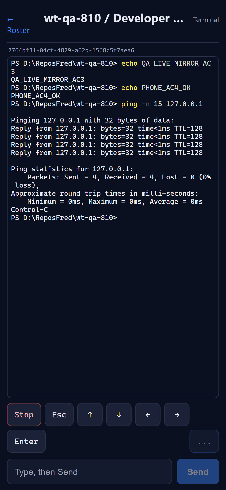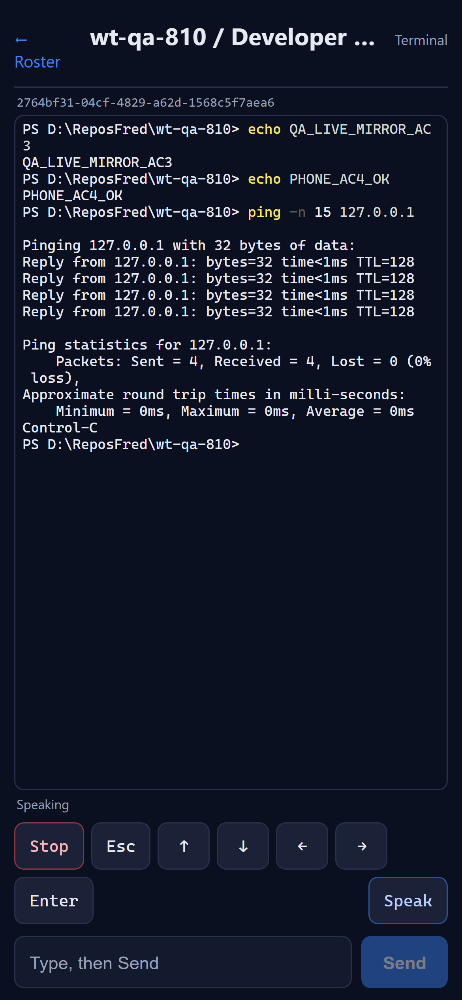</div></div>

<div class="ac"><h3>AC10 - Every call carries the injected Bearer token; works with auth on or off <span class="pass">PASS</span></h3>
<p><strong>Expected:</strong> the bearer header is present on data/command calls returning 2xx, in both auth
modes. <strong>Actual:</strong></p>
<ul>
  <li><strong>Auth OFF</strong> (<code>qa-network-authoff.log</code>): every
      <code>buffer</code>/<code>prompt</code>/<code>escape</code>/<code>interrupt</code>/<code>tts</code> call is
      <code>bearer=yes -&gt; 200</code>.</li>
  <li><strong>Auth ON</strong> (<code>qa-network-authon.log</code>): the front door rejects
      <code>bearer=no -&gt; 401</code> and a wrong token <code>-&gt; 401</code>; the token-injected app's calls
      (buffer poll with <code>since</code> advancing <code>1013 -&gt; 1102</code>, and
      <code>POST /prompt {"text":"echo AUTHON_AC10_OK","appendEnter":true}</code>) all carry the bearer and
      return <code>200</code>; the mirror rendered <code>AUTHON_AC10_OK</code>.</li>
</ul>
<p>The app always attaches the injected <code>Bearer</code> token, so its behaviour is identical whether
global auth is on or off.</p>
<div class="shots">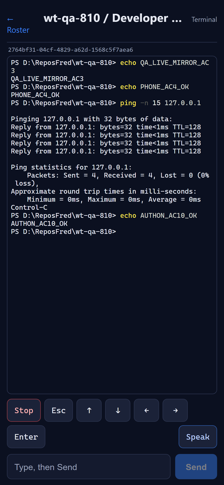</div></div>

<h2>Regression / method checks</h2>
<ul>
  <li><strong>Negative sweep:</strong> every screenshot renders correctly (no blank renders, no error
      banners); the home roster, Terminal view, control rows and input row all lay out within the phone
      viewport with no horizontal scroll.</li>
  <li><strong>CenCon:</strong> no architecture/security drift. The change is confined to the new
      <code>mobile/</code> front-end project; no backend container changed (every endpoint already exists). The
      Bearer-token boundary is preserved and reused - no blocking security rule (DT-*) is touched.</li>
  <li><strong>Node-free routine build:</strong> a Debug <code>dotnet build cc-director.sln</code> does NOT
      invoke npm (the mobile npm build is release-gated on <code>CcDirector.Gateway.csproj</code> via
      <code>RunMobileBuild</code>); the full Debug solution build succeeded, 0 warnings / 0 errors.</li>
</ul>

<h2>Conclusion</h2>
<p><strong>VERIFIED - all ten acceptance criteria met.</strong> Independently reproduced on a phone-sized
viewport against a running test Director, with QA's own screenshots and network/body captures committed
alongside this report.</p>
</body>
</html>
